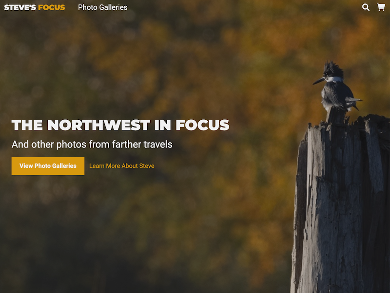
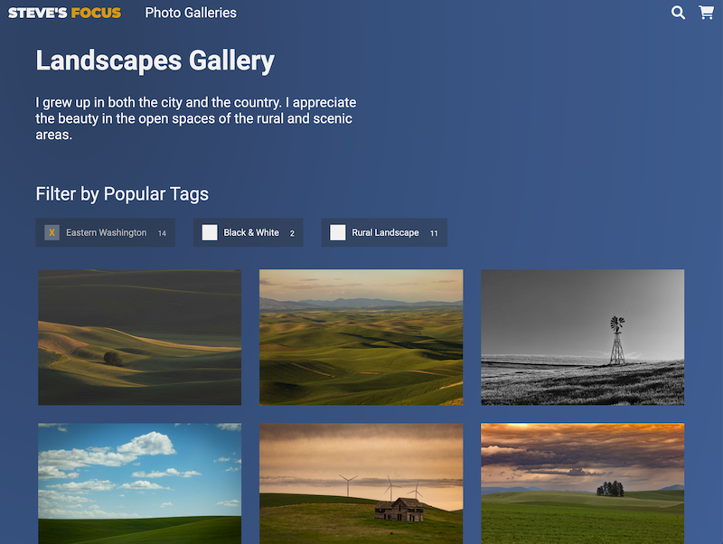
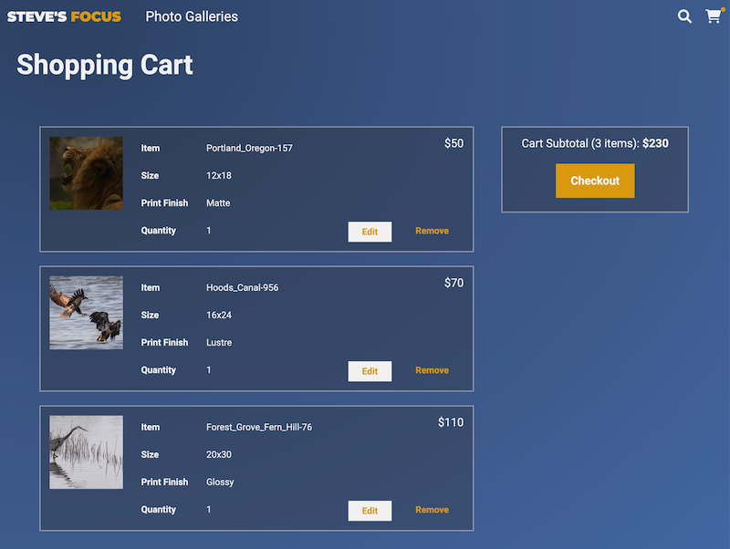
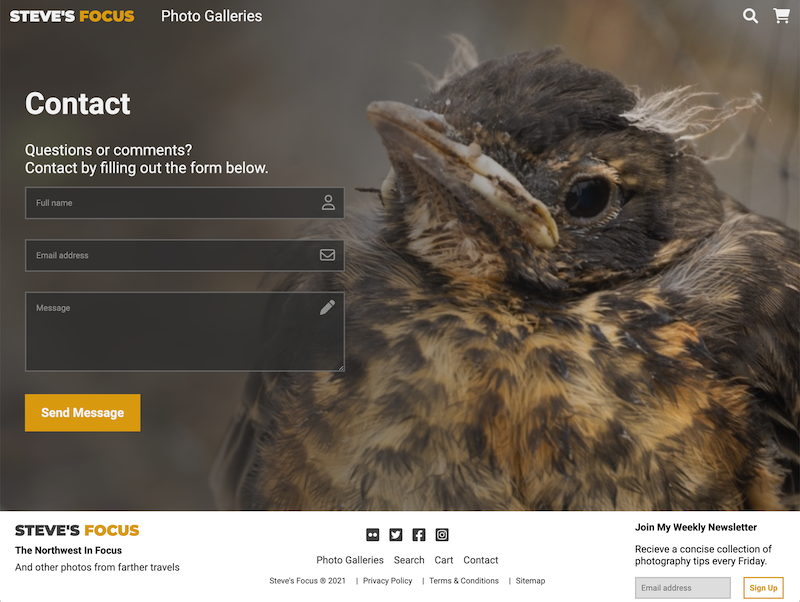

About
What I Do
I take designs for websites and web apps and bring them to life using foundational programming tools and concepts that allow everyone to connect with your or your client's services.
After spending the better part of a decade problem solving logistical challenges, client relationships, and process/team workflows as a project manager I transitioned from managing the work to doing the work.
I've been excited and grateful to have the privilege to make something with my own two hands every day since — even when that something is made of bits of data instead of metal or wood.
Projects
Photographer Portfolio Showcase
Summary
Each of the projects highlighted below belong to a larger soon-to-be-released professional website that I'm building for a photographer client. With their permission I've linked to a demo version of that website in order to showcase several key projects it contains.
The client's goal is to showcase their work online while also offering people who visit the website the ability to purchase any of the photos presented in the website's photo galleries.
Homepage
Photo Gallery
Shopping Cart
Contact Form
Contact
Ready to work together?
Let's chat.
Send an email or reach out on LinkedIn to start a conversation.
Send Email View LinkedIn Profile